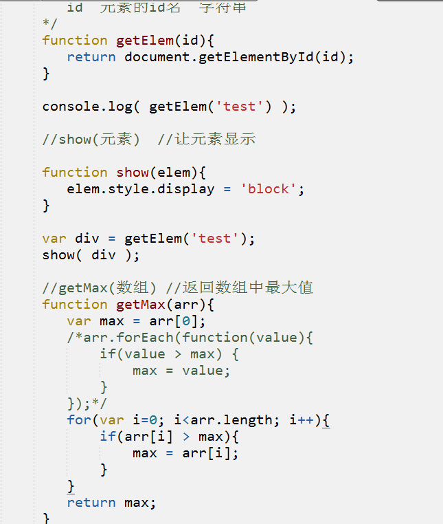

js-回顾
时间： 17/02/06
css复习
1、选择器权重
div a {color: red;}
a {color: blue;}
#
.
tag
div .item
div.item.first
div:hover
2、inline-block 与 float
inline-block 默认会有间距
3、zoom
思考
1、为什么女生逛街出门总喜欢带包？
2、为什么图书馆的书要分类？
函数
1、函数的概念 封装
功能
代码的封装
2、怎么定义函数？怎么调用函数
function
function 函数名(){
}
var 函数名 = function(){
}
div.onclick = function(){}
function show(){}
函数名() show()
(function(){})() 函数自运行
3、函数有什么用？
减少代码量 =》 代码复用
便于维护、修改
提高代码可读性
document.getElementById('banner');
function $(id){
return document.getElementById(id);
}
$('banner')
function getTop(){
return Math.random()*200;
}
css()
4、形参和实参
形参：形式参数
实参：实际参数
function add(num1,num2){
return 1 + 2
}
add();
为什么传参？
1、让函数更灵活
2、函数内部需要使用
function show(elem){
elem.style.display = 'block';
}
var a = [1,2,3];
function getSum(arr){
var sum = 0;
//遍历数组有几种方法
//for
//for in 遍历对象 var dog = {name: '小黄毛'}
for(var i in arr){
//i对象的某个属性
sum += arr[i];
}
return sum;
}
var s = getSum(a)
console.log(sum);
if(s > 10){}
if( getSum(a) ) {}
var array = [1,2,3];
getSum(array);
console.log(sum);
getEle('banner') // 通过id名获取元素
show(元素) //让元素显示
getMax(数组) //返回数组中最大值

5、arguments(类似数组的集合)
1、函数特有
2、记录了传入的所有实参
3、判断实参的个数
计算传入所有数字的和
function cal(){
//arguments
}
cal(1,2);
cal(1,2,3);
6、return（函数特有）
1、有什么用？
返回函数结果
中断（和if结合）
2、什么时候需要使用？
1、调用函数时期望函数返回结果
2、遇到某个条件时，不需要继续执行
7、匿名函数
setInterval(function(){},1000); //回调函数 参数
var show = function(){} //定义函数
div.onclick = function(){} //事件处理程序
自运行 (function(){})();
8、递归
函数内部调用了自身
重要条件：
1、递归出口(返回的是固定值)
2、递归条件(返回的是表达式)
斐波那契数列 1 1 2 3 5 8 13 21
function F(num){
if(num < 3) return 1;
return F(num-1) + F(num-2);
}
9、变量提升
将使用var定义的变量和function定义的函数提升
console.log(1);
var a = 10;
var func = function(){}
function func(){}
var a;
function func(){}
console.log(1);
a = 10;
10、值传递和引用传递
数组
1、数组的作用
处理多个数据
2、怎么定义数组？
var arr = [];
var arr2 = new Array();
function Array(){}
var arr2 = [1,2,3];
3、怎么访问数组的元素
arr2[1]
4、遍历数组
for
for in
forEach
肉鸡
5、二维数组（多维数组）
[ [ ] , [] ]
[
{
persons:[]
},
{}
]
数组中的元素还是数组
随机点名程序：
1、记录全班人的信息
2、每个人要有：名字、头像、座右铭
var students = [
['阮成','xx.jpg','xxxxx'],
[],
[]
];
students[0][0]
var stu = [
{name: '周志远',avator:'xx.jpg',zym:'xxxx'},
{}
];
stu[0].name
6、数组常用api
push pop
arr.push(1) //往数组最后添加元素
pop 从数组最后取出元素
unshift shift
splice slice
arr.splice(start,deleteCount,new)
arr.splice(1,0,123) //从第二个位置插入元素
arr.splice(2,1)
slice(start,end) 复制数组
sort
join
indexOf lastIndexOf
forEach
字符串
字符串常用api
var str = 'hahhha';
str[0] str.charAt(0)
str.charCodeAt(0)
indexOf
trim() 取出字符串的前后空格
日期对象（Date）
1、创建时间（现在、未来、过去）
var date = new Date();
var date2 = new Date('2017/2/7 18:00');
var date3 = new Date(2017,1,7,18,0);
两天之后的日期
var date = new Date();
date.setDate( date.getDate()+2 );
var date = new Date(Date.now()+2*24*60*60*1000);
2、获取当前时间戳
var date = new Date()
date.getTime();
3、常用api
年月日时分秒星期几
date.getFullYear()
date.getMonth()
date.getDate()
date.getHours()
date.getMinutes()
date.getSeconds()
date.getDay()
BOM
1、BOM是什么？有什么用？
2、核心对象window
3、window常用方法
alert confirm
定时器
每隔一段时间处理一次fn
setInterval(fn,interval)
function func(){}
setInterval(func,1000);
setInterval(function(){
},1000);
等待一段时间处理fn
setTimeout(fn,time);
滚动条事件
window.onscroll = function(){
}
获取滚动条的高度(元素.scrollTop)
document.body.scrollTop || document.documentElement.scrollTop
4、其他对象
history
控制页面前进与后退
location
控制页面刷新与跳转
location.href = 要跳转页面的地址
DOM
1、什么是DOM？ 有什么用？
DOM树
2、什么是节点？节点种类有哪些？节点关系、节点属性
nodeName
nodeType 1
nodeValue
3、元素常用属性
元素.id
div.className
div.style....
input.value
div.innerHTML
4、自定义属性
<div data-price="100" goods-id="01034232">
<img src="" data-src="1.jpg">
var person = {};
person.name = "张三丰";
var div = document.getElementById('nav');
div.index = 1;
给所有的button添加点击事件
for(var i=0; i<span.length; i++){
span[i].index = i;
span[i].onclick = function(){
alert(this.index);
}
}
5、获取元素的api
<div id="test" class="nihao"></div>
document.getElementById('test')
...............mentsByClassName('nihao')
...............mentsByTagName()
...............mentsByName()
document.querySelectorAll('#test')
document.querySelectorAll('.nihao');
6、DOM操作
//创建元素
var div = document.createElement('div');
//插入
banner.appendChild(div);
banner.insertBefore(div,banner.childNodes[0]);
//删除
父元素.removeChild(div);
//克隆
div.cloneNode(true);
div.children
文档碎片
1、js操作dom时发生了什么？
每次对dom的操作都会触发"重排"，这严重影响到能耗，一般通常采取的做法是尽可能的减少dom操作来减少"重排"
2、什么是文档碎片？
document.createDocumentFragment()
一个容器，用于暂时存放创建的dom元素
var cdf = document.createDocumentFragment();
for(var i=0; i<1000; i++){
var div = document.createElement('div');
cdf.appendChild(div);
}
document.body.appendChild(cdf);
3、文档碎片有什么用？
将需要添加的大量元素先添加到 文档碎片 中，再将文档碎片添加到需要插入的位置，大大减少dom操作，提高性能（IE和火狐比较明显）
offsetWidth和offsetHeight（重）
1、offsetLeft offsetTop offsetParent
2、怎么获取元素占据的空间大小 width + padding + border
css(div,'width');只能获取元素的宽度（不包含padding、border）
元素.offsetWidth 元素占据的宽度 width + padding + border
元素.offsetHeight 元素占据的高度 height + padding + border
获取文档的可用宽高（重）
屏幕的可用宽度：document.documentElement.clientWidth
屏幕的可用高度: document.documentElement.clientHeight
事件对象
1、什么是事件对象？有什么用？
2、怎么获取事件对象？
3、事件对象常用属性
预习
1、什么是浏览器的默认行为？ 怎么阻止？
2、什么是事件监听（DOM2级事件）？ 两种写法是什么？
3、事件流、事件委托
4、拖拽的原理（鼠标按下、鼠标移动、鼠标抬起）
5、JSON对象